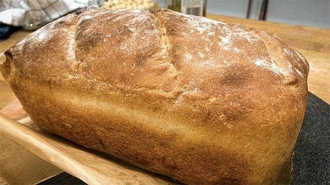

RECIPES
Baking is a great way to relax and switch off. As most of us continue to stay inside, you might be going through more bread than usual. Keep away from the shops by making your own homemade bread loaf with just a few simple ingredients. 
Check out the full recipe below:
Prep time: 15 minutes
Cooking time: 30 minutes
Makes: one loaf
Ingredients:
600g strong white flour
1 level tsp salt
2 tbsp any oil
1 x 7g sachet dried yeast
300mls warm water, roughly
Method:
- Place the flour, salt and oil into a mixer and bring together
- Add the yeast and enough warm water to form a soft dough, mix well until the dough comes away from the sides of the bowl and the gluten is now forming a stretchy dough
- Tip onto a floured surface and knead well for 5 minutes
- Return the dough to the bowl and cover with cling film and leave to double in size
- Meanwhile preheat the oven to 220C Gas 7
- Once doubled in size, remove the cling film and tip onto the floured surface again
- Now this time gently knead for a few seconds, just to bring together
- Form into a sausage shape roughly the length of a 2lb loaf tin, then fold the edges under. Pop into the 2lb loaf tin and press into the sides and bottom
- Recover with cling film and leave again to rise until just under double in size. Dust the risen loaf with a little flour
- Make 3 long, diagonal slashes across the loaf and pop into the oven. Bake until well risen and browned, roughly 30 minutes
- Once cooked remove from the tin and leave to cool completely before trying to slice